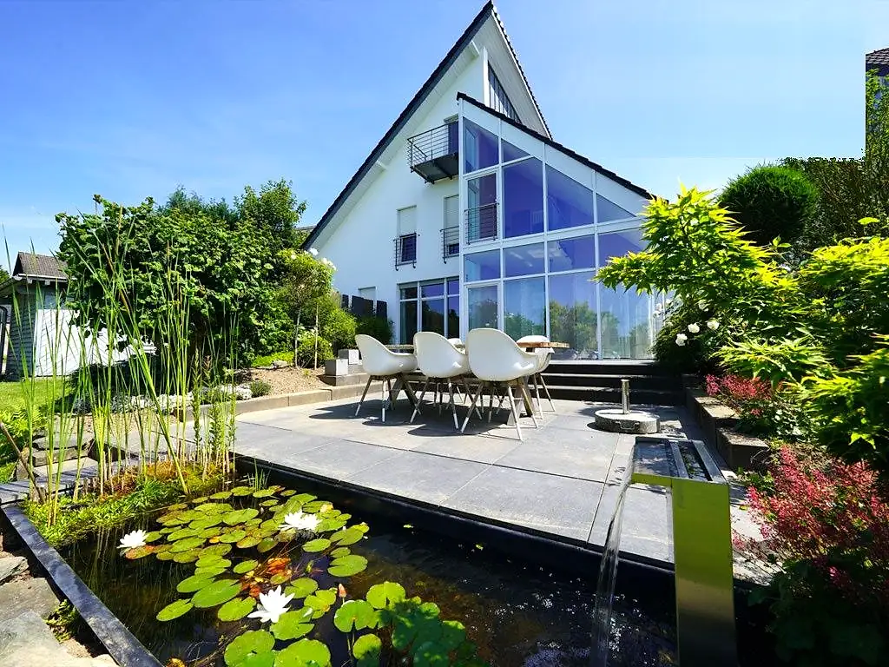
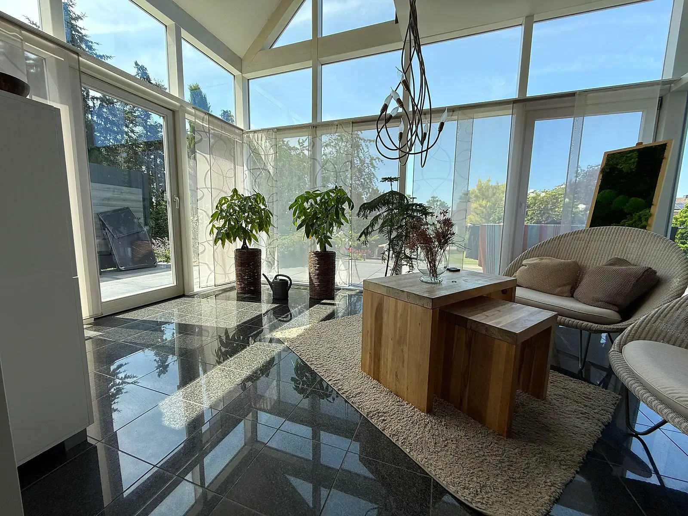
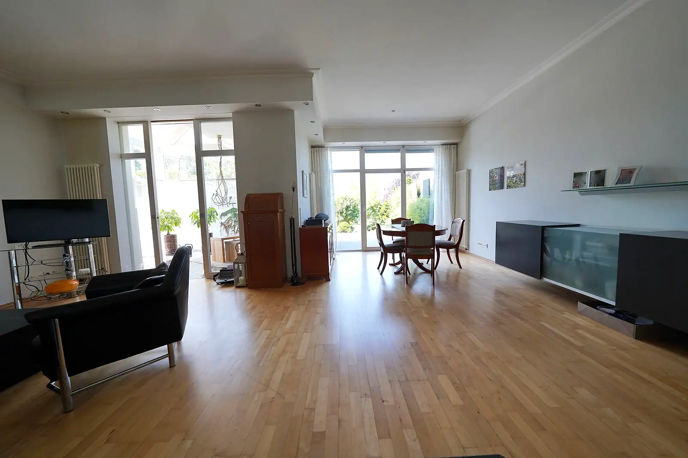
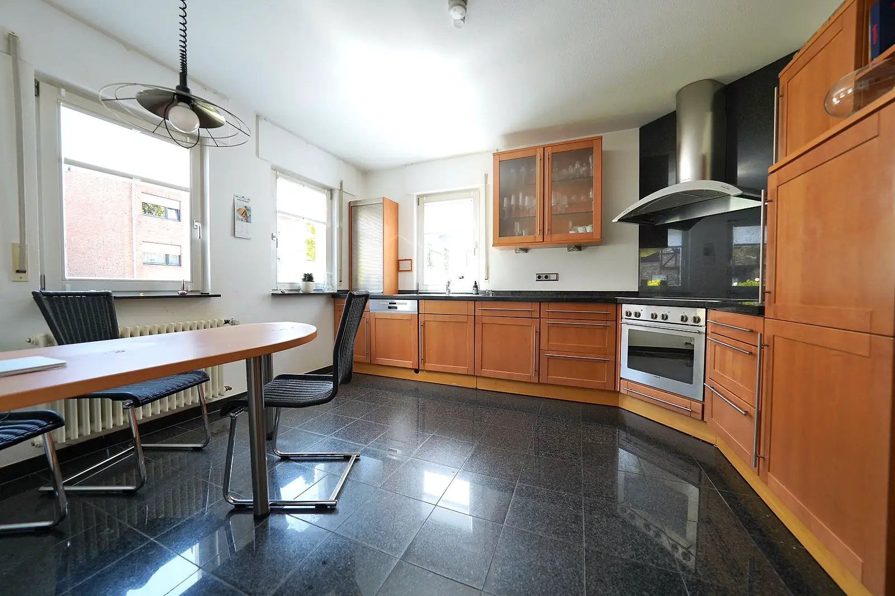
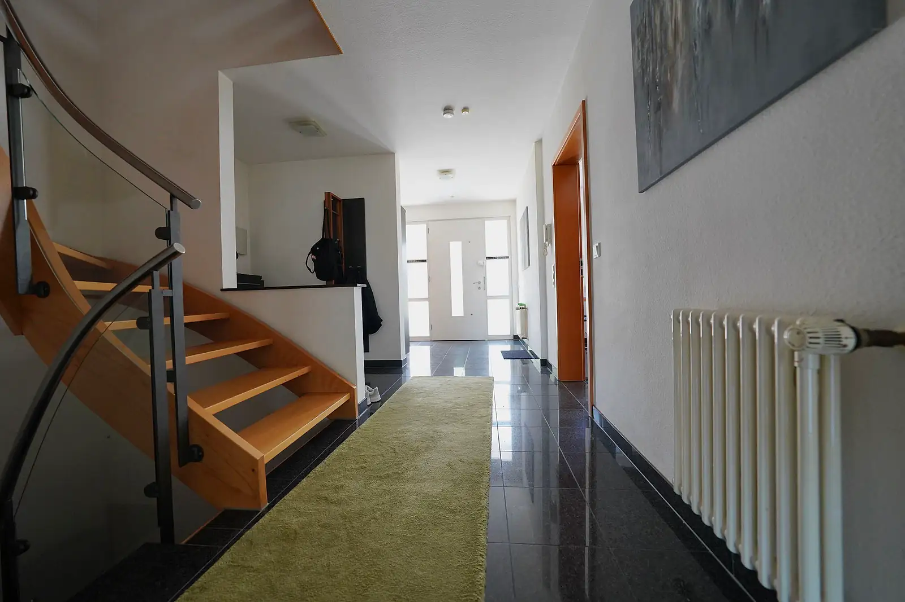
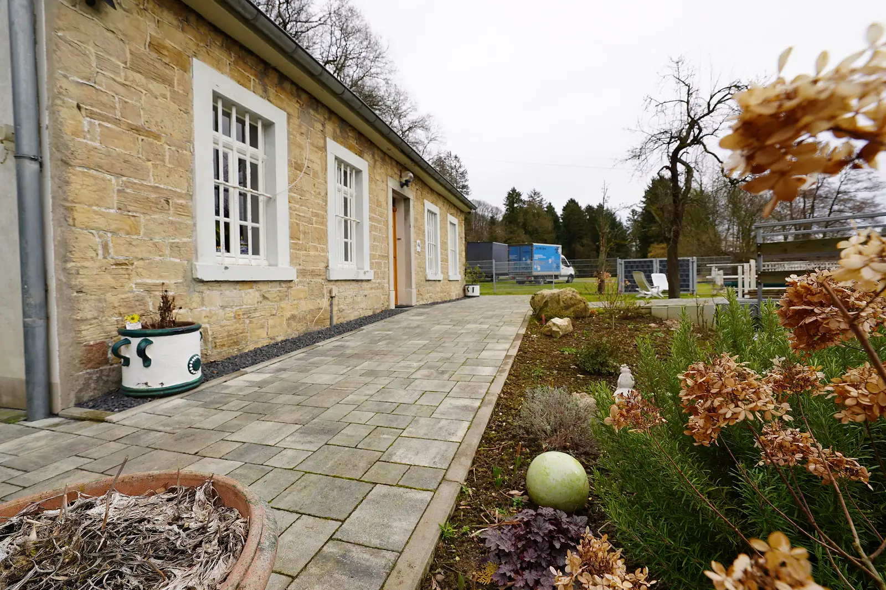
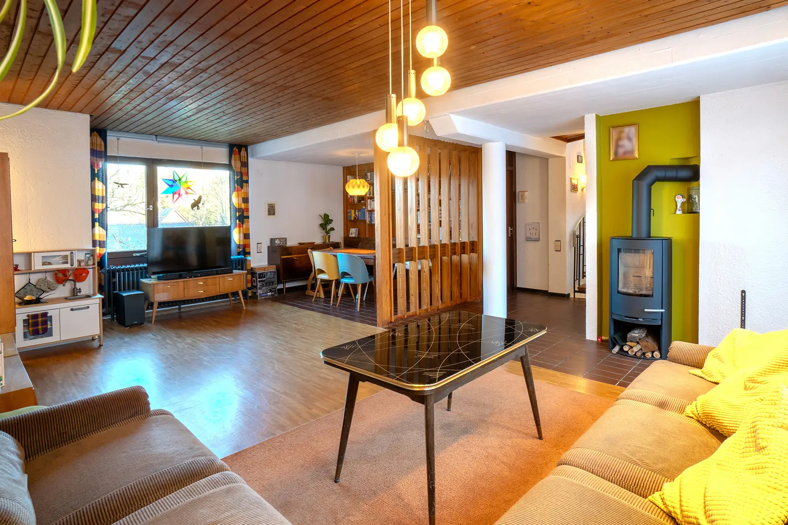
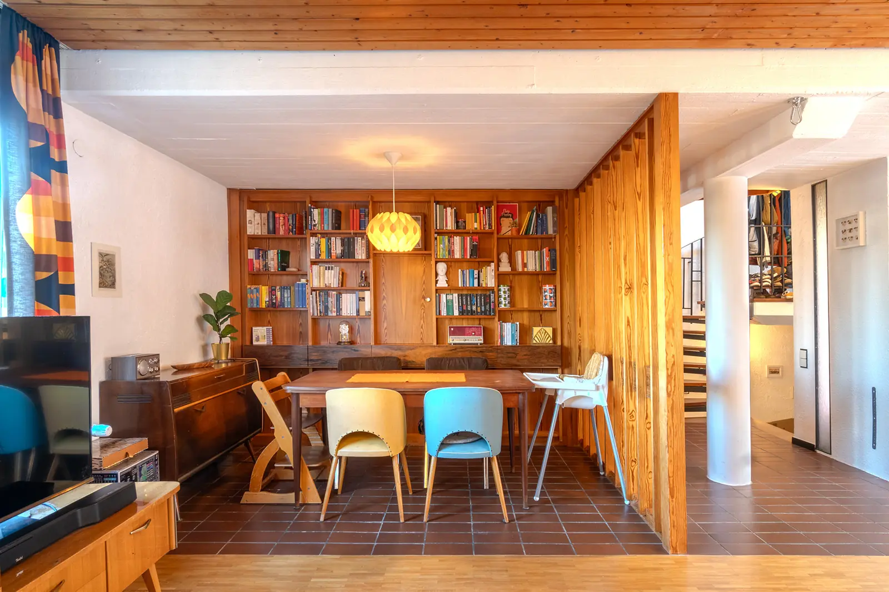
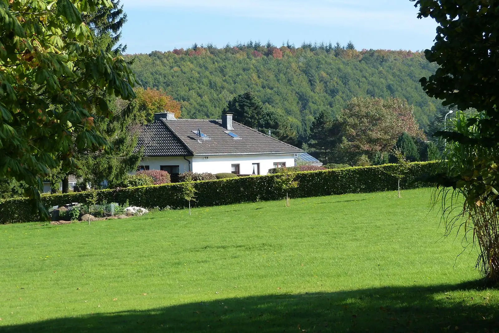
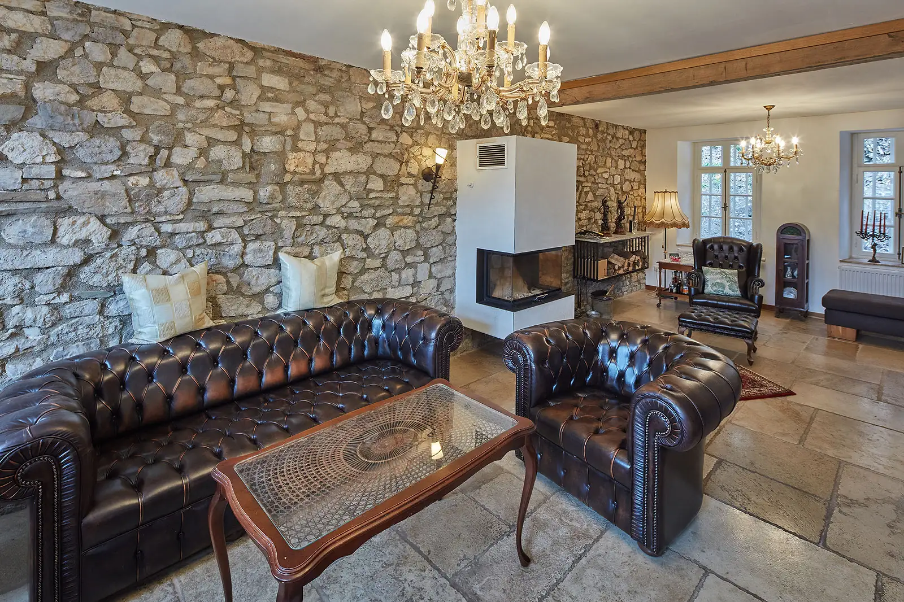

Bewertung vor Ort
Am Anfang steht immer die exakte, marktgerechte Bewertung – bei Ihnen zu Hause, nicht per Online-Rechner. Lage, Zustand, Ausstattung und Baujahr sieht nur, wer vor Ort ist.





Immobilienmakler in Stolberg · seit 1989
Kommen Sie mit: So erleben Käufer ein Haus, das wir präsentieren – von außen bis zur Haustür.
Echte Fotos eines von uns verkauften Hauses
Aktuelle Angebote
Angebote werden geladen …
Für Eigentümer
Für viele Familien, Paare und Anleger suchen wir bereits. Sagen Sie uns, was Sie verkaufen möchten – und sehen Sie, welche Suchaufträge passen.
0 vorgemerkte Suchaufträge passen
Auszug aus unseren Suchaufträgen, Stand 12.09.2025. Viele Anfragen erreichen uns nur telefonisch – rufen Sie uns an, auch wenn hier nichts passt.
Verkauf besprechenSo verkaufen wir





Am Anfang steht immer die exakte, marktgerechte Bewertung – bei Ihnen zu Hause, nicht per Online-Rechner. Lage, Zustand, Ausstattung und Baujahr sieht nur, wer vor Ort ist.
Jede Immobilie bekommt ihr eigenes Verkaufskonzept: Wir arbeiten die Besonderheiten heraus und präsentieren sie so, dass die richtigen Käufer anfragen. Auf Wunsch diskret, ganz ohne öffentliche Anzeige.
Open-House-Termine machen wir nicht. Jede Besichtigung ist persönlich begleitet – niemand wird allein durch Ihr Haus geschickt.
Viele unserer Kaufinteressenten warten schon auf das passende Haus. Ihre Bonität prüfen wir vorab – so ist die Kaufpreiszahlung abgesichert.
Wir begleiten Sie bis zum Notartermin und sind auch nach der Vertragsunterzeichnung für Sie da. Auf Wunsch kümmern wir uns um Haushaltsauflösungen, zum Beispiel nach einem Erbe.
Referenzen
84 vermittelte Häuser und Wohnungen stehen allein auf unserer Referenzliste – die meisten in Stolberg, von Breinig bis Zweifall. Dazu 4 weitere in Alsdorf, Inden, Simmerath und anderswo.
Alle ReferenzenKundenstimmen
„Anfangs wollte ich meine Wohnung ohne Makler verkaufen und bin im Nachhinein sehr froh, dass ich die Ritters hatte. Abgesehen von meiner Anwesenheit beim Notar brauchte ich nichts zu machen.“
„Besonders angenehm war, dass alle Besichtigungstermine durchgeführt werden konnten, während wir selbst geurlaubt haben – als wir wiederkamen, waren bereits mehrere ernsthafte Interessenten gefunden.“
„Wir als Erbengemeinschaft fühlten uns von Herrn Ritter von Anfang an sehr kompetent beraten. Der erzielte Verkaufspreis hat unsere Erwartungen übertroffen. Eine 1A Betreuung bis hin zum Notartermin.“
„Wir möchten uns ganz herzlich für Herrn Ritters Engagement (auch der Einsatz der Rosenschere), das sofortige Reagieren und immer Erreichbar-Sein bedanken.“
„Frau Ritter hat sich persönlich dafür eingesetzt, dass wir am Ende den passenden Mieter gefunden haben.“
„Er ist freundlich, zuvorkommend, hilfsbereit, fast immer erreichbar (selbst im Urlaub) und kümmert sich auch hilfreich um viele Dinge im Umfeld des reinen Immobilienverkaufs.“
„Sehr gute Marktkenntnis, sehr realistische Einschätzungen, großer Erfahrungsschatz. Ausgesprochen gute Einschätzung und Vorauswahl von qualifizierten Kaufinteressenten.“
„Von Anfang bis Ende kompetente Beratung und Betreuung. Sehr professionelle Bearbeitung. Man fühlte sich nie alleine gelassen.“
„Der Verkauf unserer Immobilie wurde, trotz bestehender Probleme, zu unserer vollsten Zufriedenheit abgewickelt.“
„Sein Umgang mit unserer Immobilie war so gewissenhaft, als sei es seine eigene gewesen. Für uns war der Verkauf ein angenehmes „Rund-um-Sorglos-Paket“.“
Ihr Team
Rudolf Ritter, Immobilienmakler – Gründer und Inhaber, seit über 35 Jahren am Markt in der StädteRegion Aachen.
Maike Steyns, Immobilienfachwirtin (IHK) und Immobilienmaklerin (IHK) – seit 2017 im Familienbetrieb, zuständig für Verkauf und Vermietung von Wohnimmobilien.